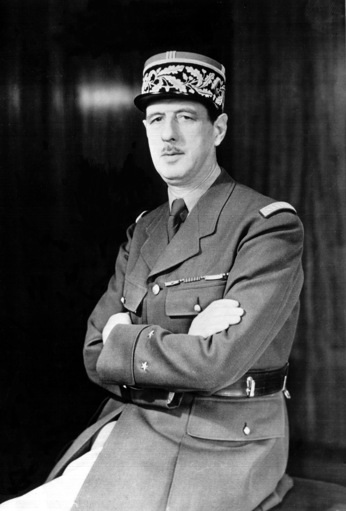

«Сражающаяся Франция» (фр. la France combattante), до июля 1942 года — «Свободная Франция» (la France libre) — патриотическое движение французов за освобождение Франции от нацистской Германии в 1940—1943 годах. Военные, примкнувшие к этому движению, образовали Свободные французские силы (иногда называемые «Французскими силами освобождения», фр. Forces françaises libres, FFL). Движение возглавлял генерал Шарль де Голль, руководя им из штаб-квартиры в Лондоне (Французский национальный комитет, до 1943 года). Оно ставило перед собой цель восстановить независимость Франции от нацистских оккупантов и сотрудничающих с ними вишистских коллаборационистов. Примыкало к антигитлеровской коалиции. Движение располагало вооружением и участвовало в ряде операций Второй мировой войны. Его успеху во многом способствовала поддержка со стороны движения Сопротивления внутри Франции. 29 сентября 1941 года СССР официально признал «Свободную Францию»[1] и установил с ней дипломатические отношения через посольство СССР при Союзных правительствах в Лондоне. В ноябре 1942 года «Сражающаяся Франция» направила в СССР для совместной борьбы против нацистской Германии группу французских лётчиков, впоследствии ставшую авиаполком «Нормандия — Неман».
Стремясь к независимости от британских властей, де Голль в первую очередь сосредоточил своё внимание на французских колониях в Центральной Африке. Администрация Чада и Убанги-Шари заявила о своем присоединении к «Свободной Франции». В Камеруне и Среднем Конго сторонникам де Голля удалось сместить представителей вишистского режима. В Браззавиле 27 октября 1940 года было провозглашено образование Совета обороны империи[fr], к которому присоединился и генерал-губернатор Французского Индокитая. Спустя год, в сентябре 1941-го, де Голль объявил о создании Французского национального комитета[fr] (ФНК). Французская Экваториальная Африка и Камерун стали местом сосредоточения и формирования войск «Свободной Франции»[2][3]. Боевое крещение Свободные французские силы приняли в сентябре 1940 года в Сенегальской операции, которая завершилась тяжёлым поражением войск союзников. Дальнейшие бои они вели в Габоне и в Эритрее, а затем во время Сирийско-Ливанской операции против французских коллаборационистов в июне — июле 1941 года.